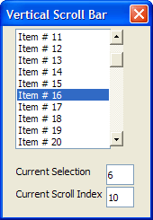

{VSCROLL}
Syntax
{VSCROLL=% Lower, Upper % Width, Height Name }
|
Argument |
Type |
Description |
| Lower |
N |
The lower limit of the range of values generated by the scroll bar. |
| Upper |
N |
The upper limit of the range of values generated by the scroll bar. |
| Width |
N |
The width of the scroll bar in characters, by default using the size of Arial 8 point characters. |
| Height |
N |
The height of the scroll bar in lines, by default using the size of Arial 8 point characters. |
| Name |
C |
The name of the scroll bar used to display it. |
Description
The {VSCROLL} command displays a vertical scroll bar.
Limitations
Desktop applications only
Example
|
dim k as N dim list as C dim pos as N dim window as C list = "" FOR k = 1 TO 110 list = list + "Item # "+ k + crlf() next old_pos = 0 pos = 0 line = 1 window = word(list,pos+1,crlf(),10) ui_dlg_box("Vertical Scroll Bar",<<%dlg% {on_key=UP!up} {on_key=DOWN!down} {on_key=PGUP!pgup} {on_key=PGDN!pgdn} {xmargin=3} .20,10line^#window{vscroll=%0,100%3,10pos!pos_changed}; {lf}; {region} Current Selection |.5line; ; Current Scroll Index |.5pos {endregion} %dlg%,<<%code% IF a_dlg_button = "pos_changed" THEN a_dlg_button = "" delta = pos - old_pos line = line + delta old_pos = pos window = word(list,pos+1,crlf(),10) ui_dlg_ctl_goto("test","line^#window") ELSE IF a_dlg_button = "up" THEN a_dlg_button = "" line = line - 1 IF line < 1 THEN line = 1 pos = pos - 1 IF pos < 0 THEN pos = 0 END IF window = word(list,pos+1,crlf(),10) END IF ELSE IF a_dlg_button = "down" THEN a_dlg_button = "" line = line+1 IF line > 10 THEN line = 10 pos = pos + 1 IF pos > 100 THEN pos = 100 END IF window = word(list,pos+1,crlf(),10) END IF ELSE IF a_dlg_button = "pgup" THEN a_dlg_button = "" pos = pos - 10 IF pos < 0 THEN pos = 0 END IF line = line window = word(list,pos+1,crlf(),10) ELSE IF a_dlg_button = "pgdn" THEN a_dlg_button = "" pos = pos + 10 IF pos > 100 THEN pos = 100 END IF line = line window = word(list,pos+1,crlf(),10) END IF %code%) |

See Also